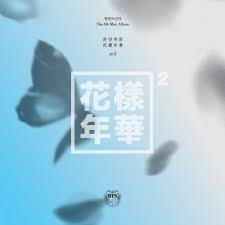
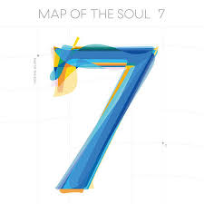

2013-2014: Trilogía de la escuela y Dark & Wild
BTS publicó su primer álbum sencillo, 2 Cool 4 Skool, el 12 de junio de 2013, como la primera entrega de su serie «trilogía de la escuela»
En septiembre llegó el primer mini álbum y la segunda parte de su serie, O!RUL8,2?, que tuvo como sencillo principal la canción «N.O». El tema se sitúo en el número 92 en Corea,44 en tanto que el disco llegó a la posición
EL grupo publicó la última entrega de la «trilogía de la escuela», el segundo mini álbum, Skool Luv Affair, el 12 de febrero de 2014.56 El disco llegó a encabezar la Gaon Album Chart y vendió 100 000 copias en 2014
2015-2016: The Most Beautiful Moment in Life
Tras el éxito moderado de la trilogía de la escuela, BTS dio un cambio completo a su imagen y sonido. Con su siguiente serie, el grupo deseaba expresar la belleza y ansiedad de la «juventud», por lo que se decantó por el título «花樣年華», que puede ser interpretado como «el momento más hermoso en la vida».
A pesar de que el segundo sencillo del disco, «Dope», alcanzó el número 44 en la lista semanal de Gaon,86 en octubre su vídeo musical fue el primero de la banda en tener más de 100 millones de visitas en YouTube
En septiembre, BTS llevó a cabo la gira Highlight por Norteamérica en colaboración con la firma de ropa Community 54.93 Mientras que en noviembre inició la gira The Most Beautiful Moment In Life On Stage, y publicó su cuarto EP The Most Beautiful Moment in Life, Part 2.
El grupo culminó su serie de la «juventud» en 2016 al publicar el álbum recopilatorio The Most Beautiful Moment in Life: Young Forever, el 2 de mayo. Este incluyó canciones de las dos entregas anteriores del proyecto, junto con remixes y tres sencillos nuevos: «Fire», «Save Me» y «Epilogue: Young Forever», que ocuparon las tres primeras posiciones de la lista de World Digital Songs; un logro que no había conseguido ningún artista surcoreano.

2016-2017: Wings
El 5 de septiembre de 2016, Big Hit lanzó el corto Wings Short Film #1 BEGIN; el primero de siete que sirvieron como adelanto del segundo álbum de estudio del grupo,116 Wings, que fue publicado finalmente el 10 de octubre del mismo año en cuatro versiones diferentes.
Por otro lado, el sencillo «Blood Sweat & Tears» fue la primera canción de la banda en encabezar la lista semanal Gaon Digital Chart,125 mientras que su vídeo musical alcanzó 10 millones de visitas en aproximadamente 43 horas, con lo que se convirtió en el vídeo de un grupo de K-pop que alcanzó más rápidamente esa cifra.
El 13 de febrero de 2017, BTS publicó la reedición de Wings, titulada You Never Walk Alone, que incluyó 4 canciones nuevas en las que el grupo complementó los temas que trató en Wings con sentimientos de consuelo y apoyo.131 Las preventas del álbum alcanzaron más de 700 000 copias,132133 mientras que el sencillo principal, «Spring Day», entró en ocho de las principales listas de música en línea surcoreanas, incluyendo Gaon,134 en tanto que la plataforma del servicio de música Melon colapsó debido a la gran afluencia de usuarios
2017-2018: Love Yourself y reconocimiento internacional
En mayo de 2017, BTS ganó el premio «Top Social Artist» en los Billboard Music Awards, por lo que fue el primer artista coreano en obtener este reconocimiento.
El grupo dio inicio a una nueva serie, llamada Love Yourself, con la publicación de su quinto mini álbum, Love Yourself: Her, el 18 de septiembre de 2017,146 el cual contó con la participación de Andrew Taggart de The Chainsmokers para la música de la canción «Best of Me».
En tanto que el sencillo principal, «DNA», llegó al número 2 en la lista semanal Gaon Chart,151 y su video musical obtuvo más de 20 millones de visitas en YouTube, lo que rompió el récord del video de K-pop más visto en las primeras 24 horas después de su publicación.
Un remix del tema «MIC Drop», realizado por Steve Aoki y que contó con la participación del rapero Desiigner, se lanzó como el segundo sencillo del álbum. El tema se ubicó en el número 23 en Corea del Sur, y en el número 28 en la Billboard Hot 100, por lo que fue la primera canción de un grupo de K-pop en entrar en el top 40 de la lista
La banda promocionó el sencillo principal del álbum, «Fake Love», en los Billboard Music Awards, que se celebraron el 20 de mayo. En la ceremonia también recibió nuevamente el premio «Top Social Artist», por lo que se convirtió en el primer artista coreano en obtener dicho galardón dos años seguidos.
2019: Map of the Soul: Persona y BTS World
En febrero de 2019, el grupo asistió a la 61.ª edición de los Premios Grammy para presentar el premio al «Mejor álbum de R&B».205206 Esta fue la primera vez que la banda formó parte de este evento después de su aparición en el Museo de los Grammy en Los Ángeles en 2018.
En abril, BTS se convirtió en el primer artista asiático en sobrepasar 5 mil millones de streams en Spotify,208 además de ser nombrados como una de las personalidades más importantes de 2019 por la revista Time, en la lista Time 100.
En noviembre, BTS fue el primer grupo coreano en ganar en las categorías «Grupo o Dúo favorito - Pop/rock» y «Artista social favorito», en los American Music Awards, por dos años consecutivos.251 En diciembre, asistió a los Melon Music Awards y a los Mnet Asian Music Awards. Fue el primer grupo en la historia del K-pop en recibir todos los premios de las principales categorías en ambas ceremonias; cuatro en cada una.
Con ventas globales de 2.5 millones de unidades, Map of the Soul: Persona fue nombrado como el tercer álbum más vendido de 2019 por la IFPI, lo que convirtió a BTS en el primer artista coreano en ser incluido en la lista Global Top 10 Album por dos años consecutivos

2020-2021: Map of the Soul: 7, «Dynamite» y Be
En enero de 2020, BTS lanzó «Black Swan», el primer sencillo de su siguiente disco, junto con un art film en el que se muestra una coreografía interpretada por bailarines de la compañía de danza eslovaca MN Dance Company; el tema debutó en las posiciones 57 y 46 en la Billboard Hot 100 y en la UK Official Singles Chart respectivamente. En ese mismo mes, la banda participó en la 62.ª edición de los Premios Grammy en la presentación de «Old Town Road» con Lil Nas X, Billy Ray Cyrus y Diplo.
a canción se ubicó en la posición 4 en la Billboard Hot 100 con 86 000 descargas,288 de manera que fue la tercera de BTS en estar en el top 10 de la Hot 100 y lo convirtió en el acto coreano con la mayor cantidad de entradas en esta.
Por otro lado, en abril llegó a ser el primer artista surcoreano en vender más de 20 millones de álbumes y, por consiguiente, pasó a ser el acto con mayor número de ventas en Corea del Sur de todos los tiempos.
La banda publicó su primer sencillo en inglés «Dynamite» el 21 de agosto junto con su video musical. Este último consiguió una nueva marca tanto para el estreno más visto de Youtube (al tener más de tres millones de espectadores) como para el video con mayor cantidad de reproducciones en las primeras 24 horas de lanzamiento. Asimismo, fue el primer clip musical de la plataforma en sobrepasar los 100 millones de visitas en menos de un día.
El 30 de noviembre de 2020, su sencillo "Life Goes On" debutó en el número uno en la lista Billboard Hot 100.Con esto, la banda registró una serie de logros notables: su tercer número uno consecutivo en solo tres meses (lo logró más rápido que cualquier banda desde The Beatles en 1964).